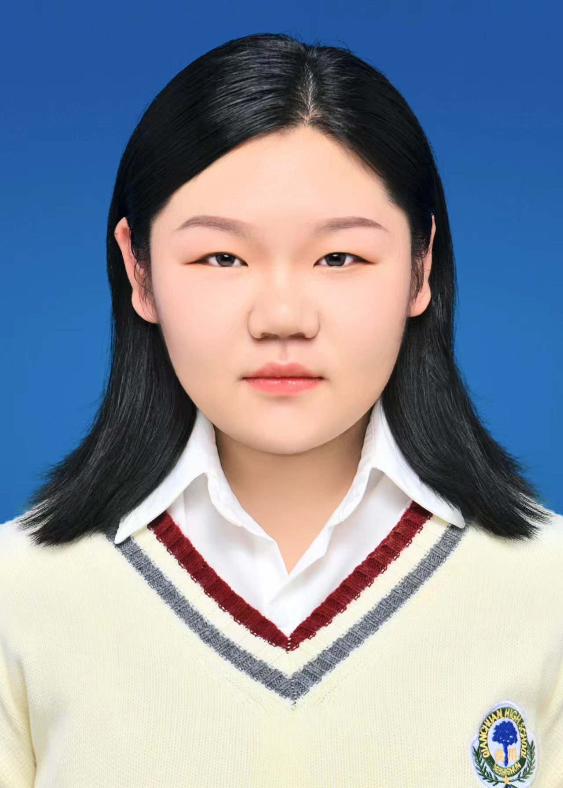

| 姓名：邢小羽 | 出生年月：2004.9.9 |  |
| 民族：汉 | 身高：167cm | |
| 电话：666666 | 政治面貌：共青团员 | |
| 邮箱：482079028 | 毕业院校：中南财经政法大学 | |
| 住址：湖北省武汉市 | 学历：本科 |
2022.09-2026.06 中南财经政法大学 信息管理与信息系统
主修课程：
计算机网络（100）、离散数学（100）、量化交易与算法（100）、西方经济学（100）、计算机网络（100）、离散数学（100）、量化交易与算法（100）、西方经济学（100）
2024-01-2024-02 前海维港创业投资基金 市场部实习生
（1）实训内容分别为财务报表分析，财务尽调流程，行业研究及路演，股票筛选与持仓策略，估值模型搭建等内容。
（2）在行业研究项目中，我们需根据目前vc capital重点跟进的11个项目的BP进行初次筛选，给出我们选择继续跟进的四个公司，分别从市
场空间，商业模式，融资计划等做出Quick Research，并提交QR，并选出一个重点跟进企业，制作Teaser，我主要负责对该公司投资亮点的
总结阐述。还完成了该公司所在行业的研究报告，我在其中负责竞品分析部分，在最终路演现场，我负责向投资人展示该公司的投资亮点以及
对比其他竞品该公司的优势，最后获得了行业研究该实习项目中的第一名。
（3）在股票筛选中，我们从基本面和技术面入手完成了股票分析和持仓策略，我在其中主要负责宏观经济分析，从GDP，经济周期和时事政策等方面进行分析，决定选股行业的大方向。
2022.09-2023.06
信息工程学院文艺统筹部
参与策划草地音乐节，艺术类比赛舞台策划以及毕业晚会整体策划与执行。
2022.09-2023.06
班级宣传委员
负责班级公众号的运营，设计并发布推文，以及学院活动的宣传和策划。
证书：CFA和FRM在学；
语言：GET-4；
技能：能够使用offices软件，python，SQL server。
专业知识：在专业能力方面，能够较好的掌握一门编程语言python，以及通过备考金融有关证书补足金融方面的空白。
综合素质：本人性格开朗，待人友好，不轻易放弃，积极完成工作，抗压能力强，具有强烈的责任感，且可以快速学习和接纳新事物。